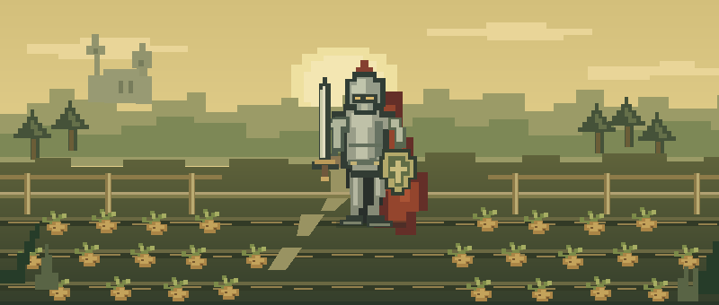

YOU HAVE ENTERED THE PATCH✦ MEMBERS & FREE PLAYERS WELCOME ✦
A LITTLE CORNER OF GIELINOR
The legend.
The humble spud.
A tribute to Zezima, the name we all knew.
And potatoes, for reasons we refuse to explain.

SOMEWHERE NEAR A VERY IMPORTANT FIELD
⚔ GOOD OLD DAYS. FRESHLY DUG.Pull up a crate ↓
A NAME WORTH REMEMBERING
IBefore the spuds, a legend.
Some names stick with you. If you spent time in RuneScape, Zezima might be one of them. A real player, a familiar name on the hiscores, and a small part of a lot of people's memories.
This little shrine is for the days of clicking trees, checking levels, and seeing a name that felt a world away. We added the potatoes.
Read about Zezima on the RuneScape Wiki ↗FAN LORE
Level 99 in being remembered. Level 99 in potatoes.
Made-up stats. Very real affection.
LEAVE A LITTLE SOMETHING
IIThe guestbook
Your notes are saved only in this browser. Other visitors cannot see them. Think of it as a little diary beside the patch.
BOOKMARK THESE FOR LATER